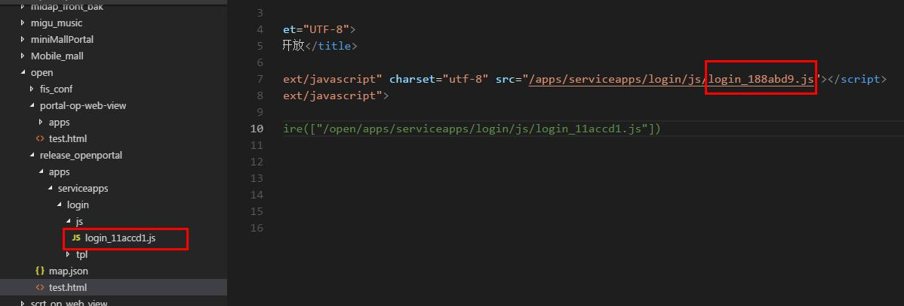
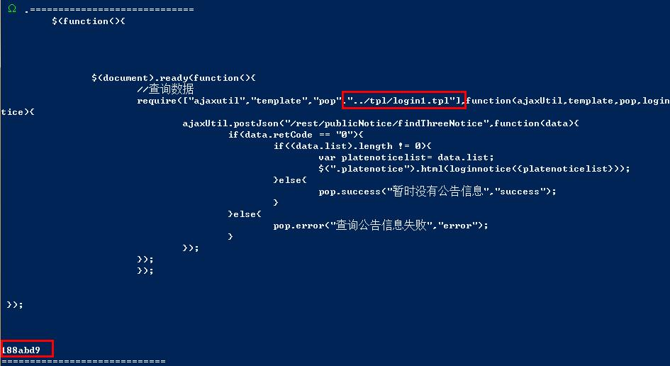
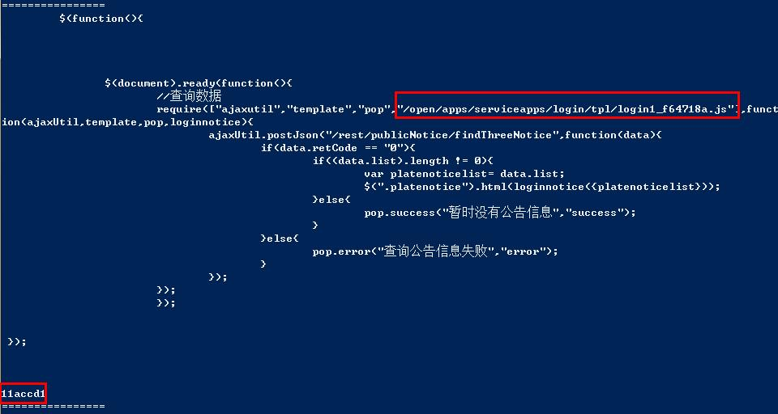
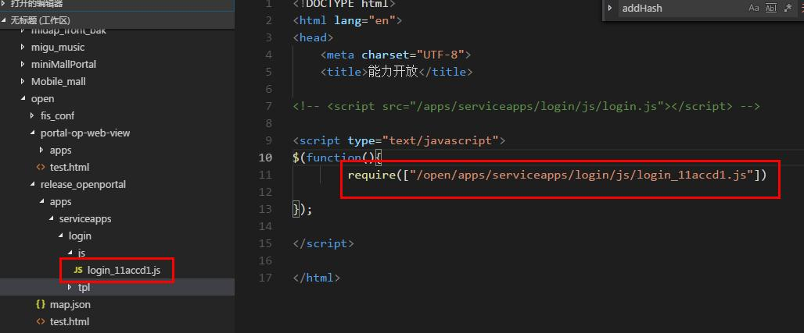
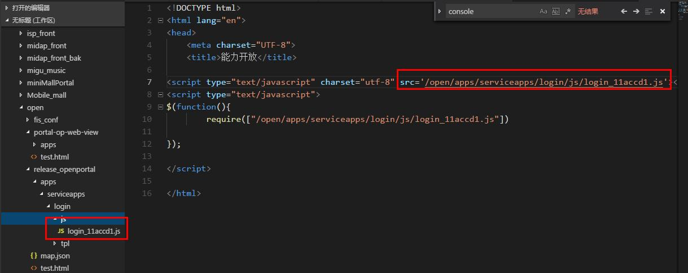

fis发布过程给文件增加md5戳导致文件加载404异常问题分析解决
背景
昨晚与shenjb讨论fis发布过程中，增加为资源文件增加md5戳的配置后，生成的文件与编辑过程中引用的位置所加的md5戳不相同，导致访问时，文件找不到；
现象
当引入的js中使用模板引擎tpl时，就会出现md5戳不一致的情况，当js中不依赖tpl模板时，则不会出现这种现象
分析
拿到简易版工程运行，出现md5戳不一致的问题：如下图  可以看到经过编译后生成的login.js的md5戳，与html中引用的不一致；
fis的relase过程是先进行单文件编译，然后打包，最后生成文件；
找到fis的源码，在relase命令的入口，找到增加md5戳的位置： release命令的入口在fis\node_modules\fis-kernel\lib\release.js文件中
var res = ret.map.res[id] = {
uri : file.getUrl(opt.hash, opt.domain),
type : file.rExt.replace(/^\./, '')
};上面的代码中file.getUrl方法中会给当前文件增加md5戳，实际调用方法是file.getHash(),位于fis\node_modules\fis-kernel\lib\file.js中：
getHash : function(){
if(typeof this._md5 === 'undefined'){
Object.defineProperty(this, '_md5', {
value : fis.util.md5(this.getContent()),
writable : true
});
}
return this._md5;
},这个方法根据文件的内容生成唯一的md5戳，内容有变化则md5戳也不同；
那么我们就把文件内容和md5戳都打印出来：
if (file.id === "portal-op-web-view/apps/serviceapps/login/js/login.js") {
console.log("=============================")
console.log(file._content)
console.log(file.getHash())
console.log("=============================")
}
var res = ret.map.res[id] = {
uri : file.getUrl(opt.hash, opt.domain),
type : file.rExt.replace(/^\./, '')
};打印结果： 
然后找到生成文件的代码位于fis\node_modules\fis-command-release\lib\deploy.js 在prepareDeploy方法中找到：
if (file.useHash && dest.opt.md5 > 0) {
release = file.getHashRelease(release);
}在getHashRelease方法中调用了getHash()来生成md5戳
function addHash(path, file){
var rExt = file.rExt,
qRExt = fis.util.escapeReg(rExt),
qExt = fis.util.escapeReg(file.ext),
hash = file.getHash(),
onnector = fis.config.get('project.md5Connector', '_'),
reg = new RegExp(qRExt + '$|' + qExt + '$', 'i');
return path.replace(reg, '') + onnector + hash + rExt;
}接着在deploy中打印出md5值 
可以看到，编译前的md5戳就是第一张图中，html引用的路径中出现的md5戳，而编译后的md5戳则是实际生成的文件所带有的md5戳
在上面两张图中还同时标出了，文件内容变化的部分，也就是引用tpl模板的位置；
提出假设
结合上述分析，我们可以提出一个相对靠谱的假设： 由于js中依赖了tpl模板，在编译过程中，tpl被编译成js文件，并且在require中变为了绝对路径，这个变化导致login.js文件内容与之前不同，而生成文件的过程中，又根据文件内容再次获取md5加密值，所以二者不同；
但是，在之前的使用中，也常常使用tpl模板，为什么没有出现这个的问题？
比对之前的工程发现： 原来的使用方式是：在html中通过require的方式引入js 这次出问题的方式是：直接在html中通过script标签引入依赖了tpl的js文件 
可以看到，改成require引入后，md5戳变一直了
验证假设
可以明确，出问题的地方在tpl模板的编译过程，tpl模板编译在插件fis-postpackager-requiretpl中
插件的逻辑是：在postpackager阶段（打包完成后）执行，循环所有经过编译的文件，当文件是html文件或是js文件时，执行parseFileD方法
下面就是parseFileD方法的代码
function parseFileD(file, ret, f) {
var content = file.getContent();
var reg = /define\(([\"|\']\w*[\"|\'],)?(\[[^\[]*\])/g;
content = content.replace(reg, function(m, m1, m2) {
m1 = m1 ? m1 : "";
var m2 = eval('(' + m2 + ')');
for (var k = 0; k < m2.length; k++) {
if (m2[0] == "template" || m2[k].indexOf("tpl") > -1) {;
m2[k] = getHashPath(ret, m2[k], file, f);
}
}
return "define(" + m1 + JSON.stringify(m2);
});
var reg = /require\((\[[^\[]*?\])/g;
content = content.replace(reg, function(m, m1) {
var m1 = eval('(' + m1 + ')');
for (var k = 0; k < m1.length; k++) {
// if(m1[k].indexOf("tpl")>-1){
m1[k] = getHashPath(ret, m1[k], file, f);
// }
}
return "require(" + JSON.stringify(m1);
});
var reg = /require\(["|'](.*?)["|']\)/g;
content = content.replace(reg, function(m, m1) {
m1 = getHashPath(ret, m1, file, f);
return m1 = "require('" + m1 + "')";
});
if (file.getContent() != content) {
file._md5 = undefined;
}
file.setContent(content);
return content;
}可以看到，parseFileD方法中有三个正则表达式，分别匹配define引入语句和require引入语句，require引入语句分为两种，引入单个文件或是多个文件
当在文件内容中匹配到以上三个表达式时： 1. 会根据引入路径，找到文件； 2. 并根据当前的文件内容生成md5戳; 3. 然后把md5戳加在引入路径的后面； 4. 替换会文件内容中
因此，当使用require引入js时，即使js文件内容因为tpl的原因，有所变换，这里会根据变化后的内容生成新的md5戳，并保存到相应的引入位置；
而通过script标签引入的文件，在这里并没有处理，所以script标签引入的js文件md5戳，依然是变化前的；所以出现引入位置和实际文件的md5戳不同的问题；
解决方案
知道了具体原因很容易就能想到解决方案： 这要在fis-recommand-requiretpl的逻辑中，对script标签引入的js也进行正则匹配，修改成新的md5戳就好了
var reg = /script(.*?)src=["|'](.*?)[_](.*?)["|']/g
content = content.replace(reg, function (m, m1, m2, m3) {
m2 = getHashPath(ret, m2, file, f);
return "script" + m1 + "src='" + m2 + "'";
});这里存在两个问题： 1、按照插件的逻辑，所有的html、js文件都会进行正则匹配，实际上js文件没有并不需要进行script标签的匹配； 2、当html中引入的其他文件名中含有同样的连接符时(下划线)，会被错误匹配处理；
为了解决这两个问题，把匹配script标签的逻辑单独抽离为独立的方法，并且只对html文件进行匹配，同时，当不需要md5戳时，也不需要进行匹配
if (file.isHtmlLike && opt.md5 === 1) { // html类文件，并且配置中存在md5戳时对script标签进行处理
parseFileHtmlScript(file, ret,file)
}parseFileHtmlScript方法中，对匹配内容进行二次处理，当文件名中存在与fis默认的连接符相同的字符时，找到最后一个连接符进行处理，避免影响到公共文件的引入
function parseFileHtmlScript(file, ret, f) {
var content = file.getContent();
var md5Connector = fis.config.get('project.md5Connector', '_')
var reg = new RegExp("script(.*?)src=[\"|\'](.*?)["+ md5Connector +"](.*?)[\"|\']", 'g')
content = content.replace(reg, function (m, m1, m2, m3) {
if (m3.indexOf(md5Connector) > -1) {
var index = m3.lastIndexOf(md5Connector)
m2 = m2 + md5Connector + m3.substring(0,index)
}
var contextPath = fis.config.get('context_path')
if (opt.domain && m2.startsWith(contextPath)) {
m2 = m2.substring(contextPath.length)
}
var info = fis.uri(m2 + '.js', file.dirname);
if (info.file){
m2 = getHashPath(ret, m2, file, f);
return "script" + m1 + "src='" + m2 + "'";
}
return m
});
if (file.getContent() != content) {
file._md5 = undefined;
}
file.setContent(content);
return content;
}运行结果： 